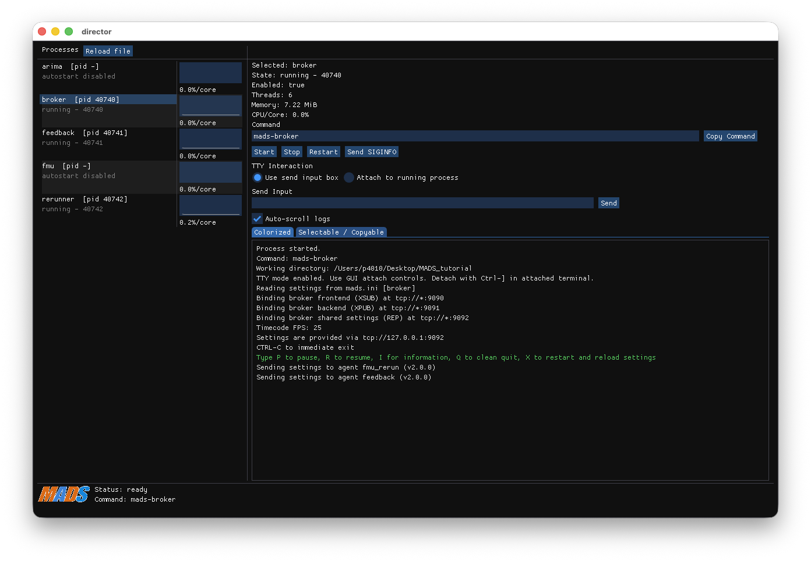

Director
MADS v2 provides a new command that makes it easier to launch and control many different agents on the same machine.
The new mads director command
It is often the case that you have to launch and control different agents on the same machine, like the broker, the logger, the monitor, the feedback, plus some other locally running agents.
This scenario requires to have as many terminals — or split screens — running, repeatedly typing the same startup commands every time.
This is of course not really ideal nor comfortable. Some users solve this issue by writing custom startup scripts, which int turn has its own downside (maintainability, programming needed).
The new command mads director is to the rescue. The command is actually a GUI that spawns a number of different processes according to a TOML file (same syntax as mads.ini).
As for any other MADS command, to launch the director you have to type mads-director (note the hyphen!).
The director.toml file
The list of commands to be executed is defined in the director.toml file, which is by default searched by the mads director command in the current working directory or in the path given as first argument. If the file is not available, it prints a template for that file, which you can use as a starting point:
The director app is also a standalone project that can be installed without Mads. For this reason, the template TOML file contains example commands that are not related to MADS, but you can replace them with any command you want, including mads commands.
As well, you can freely mix mads command with any other command, for example to launch a database, a web server, or any other process that is needed for your application.
# director example configuration
# Notes:
# - [director] is optional global settings.
# - Each top-level section name is the process name (mandatory).
# - All options are shown below with defaults and purpose.
[director] # optional: global director settings
terminal = "" # optional, default="": terminal executable for detached attach windows
[db] # process section name (mandatory)
command = "./bin/db --port 5432" # mandatory: command line to execute
after = "" # optional, default="": start after this process name
workdir = "" # optional, default="": working directory (uses director working directory)
enabled = true # optional, default=true: when false, process is listed but never started
scale = 1 # optional, default=1: number of instances to launch
relaunch = false # optional, default=false: restart on non-zero exit status
tty = false # optional, default=false: enable TTY/attach interaction
# if workdir/.venv exists, director exposes it to launched Python commands
[api] # process section name (mandatory)
command = "./bin/api_server --port 8080" # mandatory: command line to execute
after = "db" # optional, default="": dependency by process name
workdir = "services/api" # optional, default="": working directory for this process
enabled = true # optional, default=true: when false, process is listed but never started
scale = 1 # optional, default=1: number of instances to launch
relaunch = false # optional, default=false: restart on non-zero exit status
tty = false # optional, default=false: enable TTY/attach interactionEach section is the custom name for a command: for example [broker] will define the settings for launching a broker. Note that any valid command is supported (not only mads commands).
Each command has different options, above reported with their defaults:
command: this is the full command line including arguments, as if you were launching it from a terminalafter: if given, the corresponding command is executed only after starting the command at the corresponding sectionworkdir: an optional working directory; if missing, it is the directory from whichmads directorhas been startedenabled: if false, the command won’t be started automatically (but it can be started manually from the GUI)relaunch: automatically relaunch a command if it fails or crashestty: set it to true if the command accepts interaction (likemads broker)
The suggested way to use Python is by using virtual environments. If the process working directory contains a .venv directory, then it is activated before launching the process. This is the case for the rerunner.plugin.
The [director] section only has a single option, terminal, which shall be set to the full path of your preferred terminal application. If missing, the OS default will be used.
Usage
The director GUI has the following elements.
- on the left: the selectable list of processes, with their current status, PID number, and a sparkline chart of CPU load
- on the right, form top to bottom:
- details on the selected process, including memory usage (to detect memory leaks), CPU load, and number of threads
- launch command
- buttons for starting, stopping, relaunching, or sending
SIGINFOto the selected process - TTY interaction: used for sending input to the selected process
- option for attaching a terminal: if the user interaction is more complex, you can attach the running process to a new terminal window
- the process output log (normal or selectable)

mads director windowOn closing the GUI, all the controlled processes are closed.
Operating system support
The director GUI shall work on macOS, Linux and Windows. The MADS installer packages include the mads director command.
Not that the mads director is also available as a separate project on https://github.com/mads-net/mads_director.